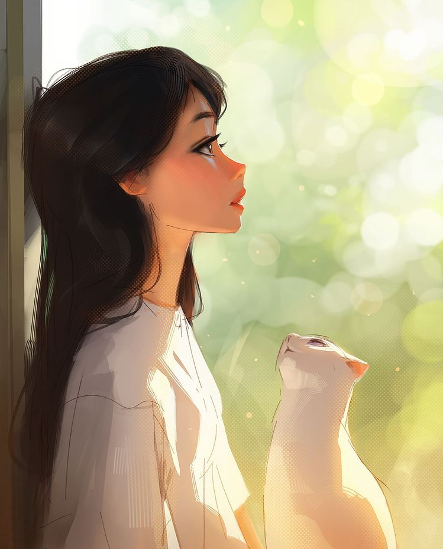

Projects
Web Development
I started learning Web Development in January 2021. I knew that HTML and CSS might be simple, but it was essential for any app or site I would make in the future to capture the aesthetic and user-friendliness of the interface. I found a John Hopkin's University course on YouTube and learned the basics of HTML5, CSS3, and JavaScript for Web Development.
My first few projects were *not* the prettiest, but it let me experiment with formatting a web page and how "events" triggered in CSS (like hovering and clicking on links). I learned a lot about git at the same time, as I was using GitHub and Windows to store my website. My first "official" site was a gamer profile where I implemented links and basic CSS.
This website is my second "official" web project. I learned how to use Twitter Bootstrap v5, which makes basic styling a lot easier and less experimental, which saved me a lot of time. I also learned more advanced CSS methods, which I used StackOverflow (a coder's saving grace) and other sites to learn. A lot of the CSS is also just me discovering new styles with the autofill provided.
Discord Bots
I started coding discord bots in November 2020, when I became interested in how the bots in the discord server I ran worked. My server has over 100 members and I wanted more personalized features in my bots, and I decided to use Discord.js to learn JavaScript at the same time. I used multiple tutorials on YouTube because I already had my own ideas for what I wanted the bot to do, so I skipped around lots of videos.
My first couple of bots were purely experimental, as usual. I was learning how to call events in JavaScript and just the basics of the API and language in general. I coded a bot that played rock-paper-scissors and a number guessing game. In addition, I coded another to read quotes off of a text file and choose a random one to display when requested to. This made it easier to add quotes to the "database".
My most advanced bot was a counting bot that allowed members of a server to try and beat high scores by counting, and they were able to use more advanced functions like exponents, parenthesis, and modulus. I used my infix-postfix knowledge from Data Structures and implemented it in JavaScript, requiring me to write my own Stack class. I hosted the bot on Heroku, where it restarted everyday but I didn't know how to store data in a database like SQL yet, so the variables also reset. I coded it to notify the members when it restarted, though.
Minecraft Plugins
I started coding Minecraft plugins in August 2020, after I started watching Minecraft YouTubers like Dream and GeorgeNotFound, who coded their own plugins for their videos. This inspired me to try coding my own plugins, so I followed a tutorial that taught me about the Spigot/Bukkit API, how to run my own localhost server, and how to export an executable jar file to make it work in-game.
The first plugins I coded were pretty simple, including one that allowed you to leap further based on the number you used in the command. I also learned how to use the Events in Bukkit, and made a plugin that sensed when you had less air, which allowed you to breathe underwater. This could also be toggled on and off.
Soon, I was coding more advanced plugins, using GUIs, ItemStacks, Runnables, and cancellable Events together to make really cool minigames. I made a Gamble plugin that let you gamble diamonds for random items, that implemented a "spinning" GUI. I made a Compass plugin that let you track players in a game, inspired from the Minecraft Manhunt series. I also made a Tag plugin that let players on a server play a game of Tag, which lasted five minutes and outlined whoever was "it".
Java Projects
I started coding in Java in July 2019. I began learning to prepare for my Foundations of Computer Science class, which I would be taking that school year. I attended a summer camp that taught me the basics of coding and how to think like a coder. I also completed numerous codingbat exercises during the camp, which taught me the problem-solving skills I needed for debugging.
My first project was an "arcade" game that gave you 100 tokens to start with, and let you gamble them. It took in user input and generated random numbers as part of the "spin wheel". Then it distributed your tokens back based on how many matching numbers you got, and if you got a jackpot. I learned if, for, and while statements as well as how to use the Scanner class.
More recently, I have coded a local-run Battleship game using Java GUIs with pretty good visuals. I made it during the summer of 2020 to review the principles I learned in Foundations of Computer Science, such as Buttons, arrays, class structure, matrices, storing and manipulating data, and learn some new concepts like switching frames during the game. I've also coded a quick 2048 game in a day during 2020 winter break because I was bored, but it's still fully functional and runs in the console.
Back to Top